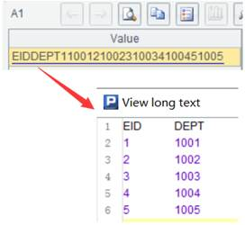

Description:
The inverse operation of A.bits() function; get value of the nth bit.
Syntax:
B.bits(n)
Note:
The function gets value of the nth bit; it is the inverse operation of A.bits() function.
Parameter:
|
B |
The value returned by A.bits(). |
|
n |
An integer representing the nth bit. |
Option:
|
@b |
Judge whether value of the nth bit in sequence B is 1; the function returns true when the bit value is 1; and returns false when it is 0. |
Return value:
0/1/Boolean
Example:
|
|
A |
|
|
1 |
=192.(rand(2)) |
Randomly generate a sequence of binary bits. |
|
2 |
=A1.bits() |
Convert A1 to a sequence of long numeric values. For instance:  |
|
3 |
=A2.bits(61) |
Return 1. |
|
4 |
=A2.bits@b(61) |
Judge whether the 61th bit member of A2’s sequence is 1 and return true |
|
5 |
=192.(A2.bits(~)) |
Return same result as A1 does. |